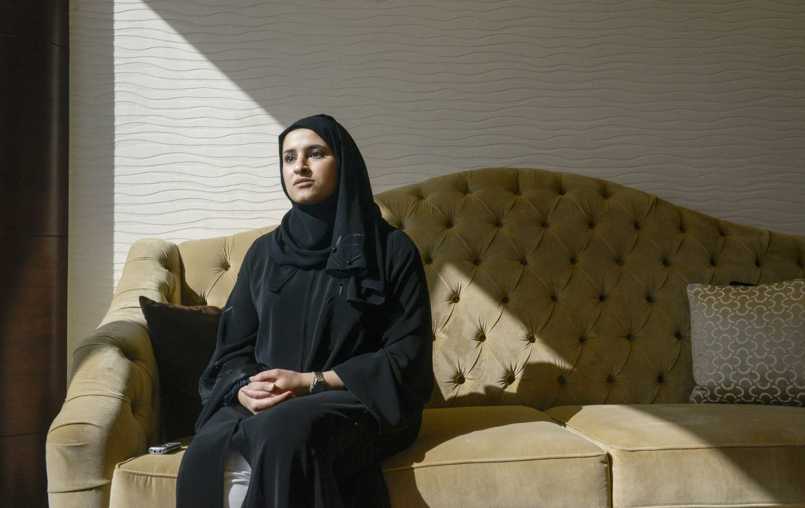

Ms. al-Amiri, right, and Omran Sharaf, the Hope project manager, during a 2015 ceremony in Dubai to unveil the mission.Credit...Karim Sahib/Agence France-Presse — Getty Images
As a girl growing up in Abu Dhabi, one of the United Arab Emirates, Sarah al-Amiri looked at an astronomy book with a photograph of Andromeda, the giant galaxy neighboring our Milky Way. “I can’t describe it,” Ms. al-Amiri said in an interview, “but just to realize that something that was printed on a page was larger than anything that I’ve ever seen and dwarfs the planet that I live on.” When she was in college, there were few opportunities in the Middle East to pursue studies of the universe, and Ms. al-Amiri majored in computer science instead. But now, the U.A.E. is aiming to inspire its youth to pursue science and technology careers, and Ms. al-Amiri has forged a career pursuing the heavens.
Just 33 years old, she is the head of science operations and the deputy project manager for a space probe that the U.A.E. is about to send to Mars. A rocket lifting a spacecraft called Hope has begun its journey to Mars. The launch will be the boldest move yet by a country that is looking to establish a future that will long outlive its oil wealth, and sees a space program as one way to accomplish that goal. Mars will be much in the news for the next month, a once-every-26-month interlude when Earth and Mars line up to allow robotic spacecraft to make a relatively quick trip. After several delays, NASA’s next Mars rover, Perseverance, with instruments to search for chemical signs of past life, is scheduled to launch on July 30. China will also launched an ambitious mission to Mars, Tianwen-1 on July 23.
"About the size of a Mini Cooper car, Hope is to arrive in orbit around Mars in February."
A fourth mission, which would put a Russian-European rover named Rosalind Franklin on Mars, was pushed off the calendar because of technical hurdles that could not be cleared in time. Preparations for Hope, the smallest of the bunch, proceeded smoothly, and it was the first to be ready for liftoff. Because the U.A.E. does not yet have its own rocket industry, it bought the launch for Hope aboard an H-IIA rocket from Mitsubishi Heavy Industries, a machinery maker in Japan. Because of bad weather at the launchpad on an island in Japan, liftoff was delayed a number of times to Sunday, July 19, or Monday local time.
About the size of a Mini Cooper car, Hope is to arrive in orbit around Mars in February. The spacecraft — which cost about $200 million to build and launch — will carry three instruments: an infrared spectrometer, an ultraviolet spectrometer and a camera. From its high orbit — varying from 12,400 miles to 27,000 miles above the surface — Hope will give planetary scientists their first global view of Martian weather at all times of day. Over its two-year mission, it will investigate how dust storms and other weather phenomena near the Martian surface speed or slow the loss of the planet’s atmosphere into space. That, however, is not the main reason that the Emirates government built Hope.
“A lot of you might ask us, ‘Why space?’” Omran Sharaf, the Hope project manager, said during a news conference on Thursday. “It’s not about reaching Mars.” Rather, Mr. Sharaf said, the country’s primary aim is to inspire schoolchildren and spur its science and technology industries, which, in turn, will enable the Emirates to tackle critical issues like food, water, energy and a post-petroleum economy. “It’s about starting getting the ball rolling,” Mr. Sharaf said, “and creating that disruptive change, and changing the mind-set.”
The Emirates previously built and launched three earth-observing satellites, collaborating with a South Korean manufacturer and gradually taking on greater shares of the engineering. The country even has a nascent human spaceflight program. Last year, the U.A.E. bought a seat on a Russian Soyuz rocket and sent its first astronaut, Hazzaa al-Mansoori, for an eight-day stay at the International Space Station. For the Mars mission, the country took a similar approach to the earlier satellites by working with the Laboratory for Atmospheric and Space Physics at the University of Colorado Boulder, where Hope was built before being sent to Dubai for testing. By design, Emirati engineers worked side by side with their counterparts in Boulder, learning as they designed and assembled the spacecraft. “One of the requirements that the government gave us since the beginning,” Mr. Sharaf said, “they told us, ‘You have to build it and not buy it.’” The science piece of the mission was an even bigger gap to fill for a country without Mars scientists, which until recently constituted an unfathomable career choice. Ms. al-Amiri is the head of science even though she never formally studied planetary science.
After she graduated college with a computer science degree, the likeliest job prospects — working at a networking company performing troubleshooting and maintenance — did not enrapture her. She wanted to design and build new things. She saw a job posting at what is now known as the Mohammed bin Rashid Space Center in Dubai. She joined in 2009, working as an engineer on the satellite programs. When that assignment wrapped up in 2014, she moved on to her current roles on the Hope mission. She now also serves as the country’s minister of state for advanced sciences and chairs an advisory council of scientists.
Sarah al-Amiri is the head of science operations and the deputy project manager for the Emirates Mars Mission, the U.A.E.’s first space mission.Credit...Khushnum Bhandari/Bloomberg
If the U.A.E. had tried to train planetary scientists from scratch to work on Hope, the mission would have been long over before the scientists were ready. Instead, Emirati officials took a quicker approach: converting some of the space center’s engineers into scientists by offering apprentice-like training with researchers in the United States. “I was put there to develop scientific talents within the organization and be able to transfer knowledge in a nontraditional way,” Ms. al-Amiri said. The coronavirus outbreak tossed in more challenges.

Once construction of the spacecraft was complete in Colorado, a large Ukrainian transport plane ferried it to Dubai, where it was to undergo a round of testing before heading to the launchpad in Japan. But at the end of February — not long before the European Space Agency and Russia postponed the launch of the Rosalind Franklin mission in part because of the logistical hurdles created by the pandemic — Mr. Sharaf and Ms. al-Amiri realized the outbreak could disrupt their carefully planned schedules if airports were shut down. “Based on that, we started working on a plan to get the team across to Japan as soon as possible,” Ms. al-Amiri said.
They shuffled some of the tests in order to hurry the spacecraft to Japan, three weeks earlier than originally planned, and where some of the testing would instead be completed. Travel restrictions meant team members could not travel back and forth. A small team went ahead in early April to wait out a quarantine. Two weeks later, the cargo plane with Hope flew to Japan with another small team from the Emirates. In Japan, the people who flew with Hope then went into quarantine and then those who had gone ahead joined the spacecraft on the barge trip to the island that is home to the launch site. Mr. Sharaf and Ms. al-Amiri said the mission was now ready, and the nation’s space program would continue regardless of the outcome.
“The Emirates fully understand the risk associated with this mission,” Mr. Sharaf said. “So does the team. Let’s be honest. Fifty percent of the missions that have been to Mars have failed.” The greatest success is the training of the people, he said.
“For the Emirates, it’s more about the journey,” Mr. Sharaf said. “It’s more about the impact. Reaching there is one of the goals. But that doesn’t mean that the mission has failed, if we didn’t manage to get there. So failure is an option.”
China’s Mars Mission, Tianwen-1, Begins Its Monthslong Journey
China Will Answer ‘Heavenly Question’: Can It Land on Mars?
Mars Mission From United Arab Emirates Embarks on 7-Month Journey